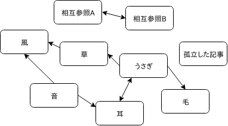

GC: ガベージコレクション
2019-07-19
eliza0x
自己紹介
- IC科B3です
- 『いらいざ』って呼ばれてます
- 代表的な制作物はコンパイラやCPU
- 畑を耕して糸を紡いだりもします
- 最近はTPS/FPSに時間吸われてます
ガベージコレクション
- プログラミング言語とかに入ってるメモリを自動で管理してくれるやつ
- 今日はこれのアルゴリズムとかについて話す
- まず前提としてプログラミング言語について話す
メモリを割り当てる必要がある
> malloc <
freeの罠
- メモリの二重解放問題
- mallocで割り当てたメモリを二回freeすると何が起こるかわからない
- めんどい
メモリを手動で管理するのは難しい
- じゃあ自動化したい
- GC
- ライフタイム
- スマートポインタ(これは実質GC)
GC: ガベージコレクション
代表的なものは4つあるが今回は2つアルゴリズムを紹介する
参照カウントGC
- 一番有名
- 何箇所からそのオブジェクトが参照されているか数えておく
- 参照されなくなるともういらないので解放
参照？
- Wikipediaで例えます
- Wikipediaの記事はhyperlinkでお互いに参照しあってる
- もし記事が孤立すると、もうWikipedia内ではその記事に到達することはできない
オブジェクト間の参照
Wikipediaの参照記事
オブジェクト間の参照
Wikipediaの参照回数
到達することはできない
- じゃあもうその記事いらないよね？
- 開放して良い。
- これが参照カウントGCのアイデア
アルゴリズム
- ここから具体的にどうやって参照カウントを実現するか紹介します
- 疑似コードです
参照増加
- 配列に挿入された
- 構造体のフィールドに代入された
- みたいな時
参照減少
- 変数のスコープを抜けた
- そのオブジェクトを参照しているオブジェクトが死んだ
参照カウントGCのメリット/デメリット
- GCごとにいろいろある
- いいとこ取りをするために複数組み合わせたりする
メリット
- アルゴリズムがシンプル
- 長時間GCのためにプログラムが停止することはない
- 不必要になったメモリはすぐ解放される
デメリット
- 相互参照しているオブジェクトが孤立すると回収不可能になる
- 頻繁にGCが動くため、パフォーマンスが低下する
- GCのために各オブジェクトにカウンタのためのフィールドをもたせる必要がある
マークスイープGC
- メモリが足りなくなるとプログラムを止める
- 生きているオブジェクトにしるしをつける
- しるしのついていないオブジェクトを解放する
- シンプルなアルゴリズムなのでいきなり解説します
フェーズ
マークスイープGCは2段階に分けて処理を行う
- マークフェーズ: 生きているオブジェクトにしるしをつける
- スイープフェーズ: しるしのついていないオブジェクトを解放する
マークフェーズ
- CPU内のレジスタとスタック内のポインタの集合をrootsとする。
スイープフェーズ
fun sweep_phase(memory) {
obj = memory.start
while (obj < memory.end) {
if (obj.marked == true) {
obj.marked = false
} else {
free_memory(obj)
}
obj += obj.size
}
}
メリット
- 実装が簡単
- メモリをまとめて解放するので参照カウントより性能が良くなる場合がある
- 相互参照されているオブジェクトも開放できる
ほかにもいろんなGCがある
- 今回紹介した: 参照カウントGC, マークスイープGC
- 今回紹介していないGC: コピーGC, マークコンパクトGC
- GCの基本となるものはこの四種類だけで、世の中のGCはこれの改良とか組み合わせで成り立っている
例: 世代別GC
- できたてのオブジェクトはすぐ死ぬ可能性が高い
- じゃあ長生きしているオブジェクトは隔離して、たまにGCするだけで良いのでは？
- → 世代別GC
- JVMのG1GCなど, 僕の好きなHaskellもこれをデフォルトで使ってたはず
最後に
- GCのアルゴリズムはシンプルだから、皆も自分の考えた最強のGCをシステムに組み込もう
- GCを使わないという選択肢もある: C, Rust, apache